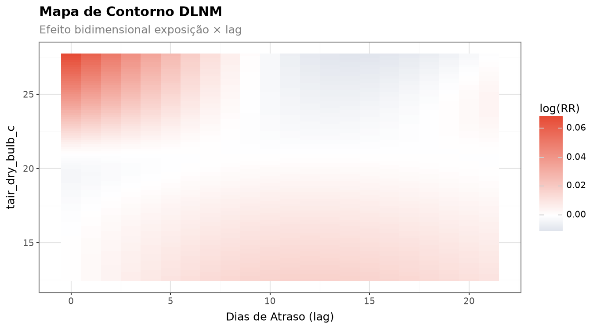
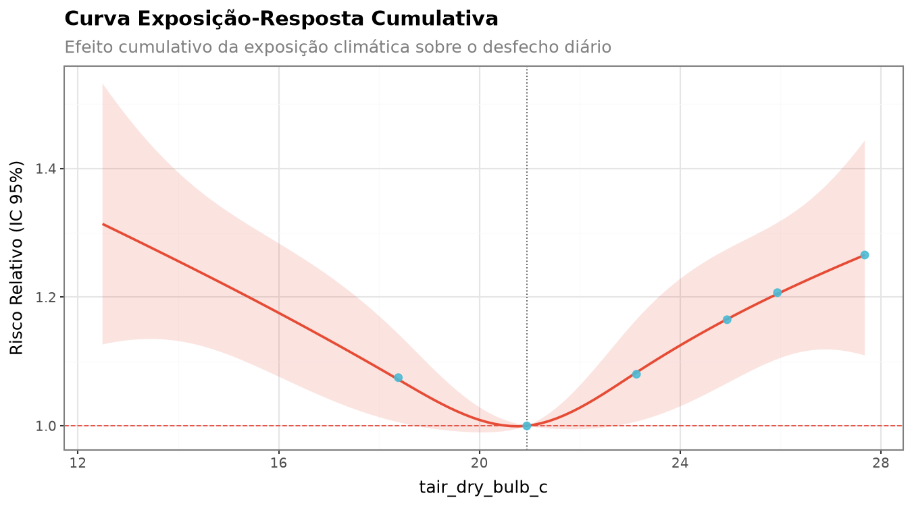
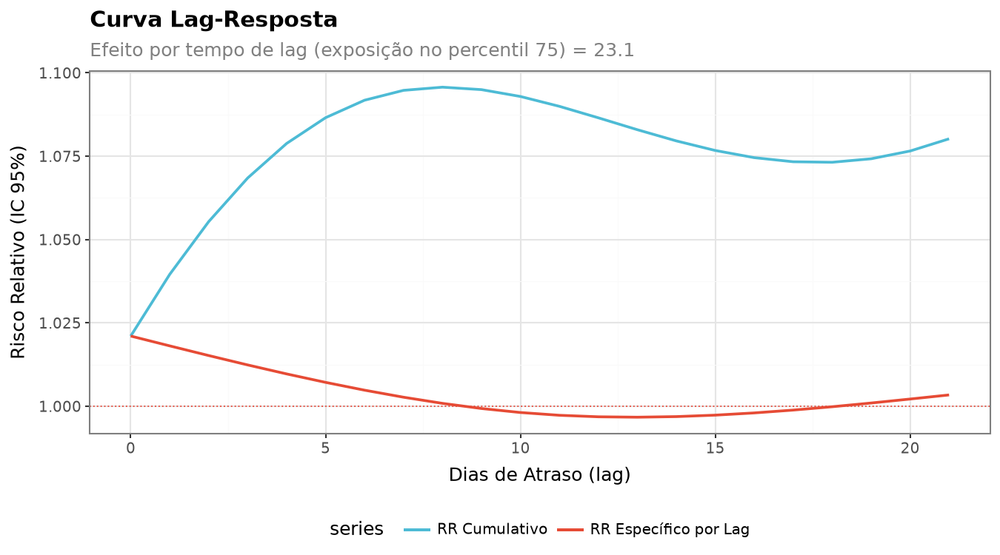
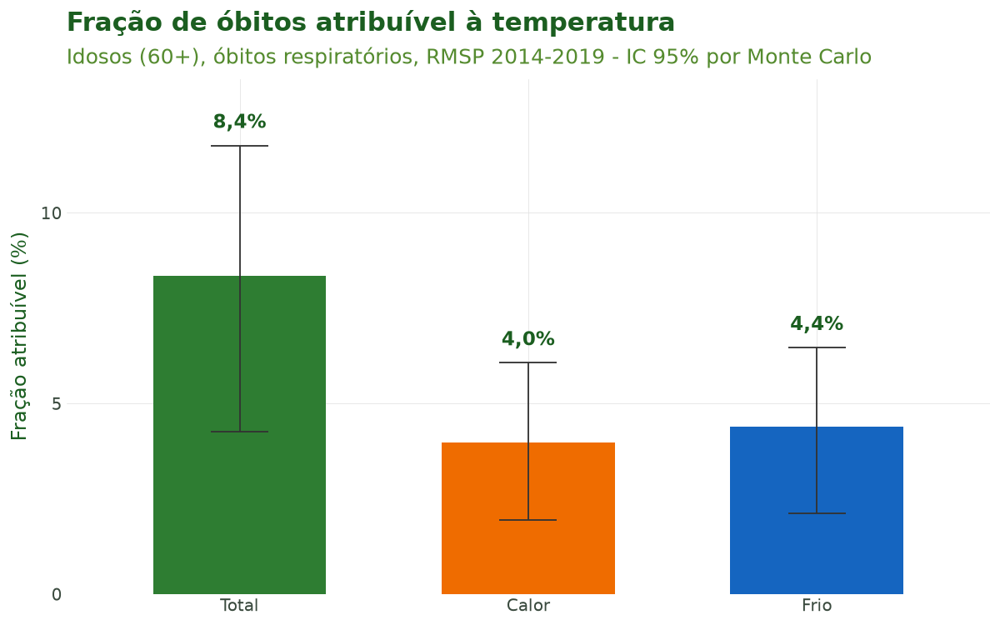

Tutorial 9: Modelagem Epidemiológica (DLNM)¶
← Voltar para a Trilha do Pipeline
Objetivo¶
Ao final deste tutorial você será capaz de transformar uma série diária de saúde alinhada ao
clima em inferência epidemiológica: estimar a relação não linear e defasada entre temperatura
e mortalidade com um DLNM (sus_mod_dlnm()), quantificar a carga atribuível ao calor e ao
frio (sus_mod_af()), e conhecer as demais ferramentas de modelagem do climasus4py — séries
temporais interrompidas (sus_mod_its()), case-crossover (sus_mod_casecrossover()) e
meta-análise multicidade (sus_mod_pool()).
A modelagem é a última etapa do pipeline. Ela consome a saída das etapas anteriores (a série de saúde dos Tutoriais 1 a 5 e a exposição climática do Tutorial 7) e produz estimativas de risco relativo, frações atribuíveis e visualizações prontas para publicação.
Contexto científico¶
A epidemiologia ambiental moderna trata a associação entre uma exposição ambiental (temperatura, poluentes) e um desfecho diário de contagem (óbitos, internações) como um problema não linear e defasado no tempo. O calor extremo mata no mesmo dia ou em 1–2 dias (efeito agudo); o frio mata ao longo de uma a duas semanas (efeito tardio e prolongado). Modelar apenas a temperatura do dia subestima o efeito do frio.
O Distributed Lag Non-linear Model (DLNM) de Gasparrini, Armstrong & Kenward (2010) resolve
isso com uma cross-basis: a combinação de duas bases de splines — uma na dimensão da
exposição (captura a curva em U/J: o risco sobe no frio e no calor) e outra na dimensão do
lag (captura como o efeito se distribui ao longo dos dias). O método foi implementado no pacote
dlnm do R (Gasparrini, 2011); sus_mod_dlnm() constrói a mesma cross-basis em Python.
O ajuste segue as boas práticas de regressão de séries temporais em epidemiologia ambiental
sistematizadas por Bhaskaran et al. (2013): modelo log-linear quasi-Poisson (robusto à
superdispersão) e controle de tendência de longo prazo e sazonalidade por spline natural do tempo.
O ajuste para dia da semana, também recomendado, não é incluído automaticamente por
sus_mod_dlnm(): entra como covariável, com colunas indicadoras do dia passadas em covariates. A
fração atribuível decompõe a carga total de eventos em componentes de calor e frio
(Gasparrini & Armstrong, 2013).
Caso condutor. Investigamos a temperatura e os desfechos de saúde em idosos (60+) na Região Metropolitana de São Paulo, 2014–2019. Aqui juntamos a série diária de óbitos respiratórios dos oito municípios com a temperatura média diária da estação A701 (São Paulo – Mirante de Santana, Tutorial 7), montamos a estrutura de lags distribuídos e ajustamos o DLNM para estimar a curva exposição-resposta e a carga atribuível ao calor e ao frio.
Dados utilizados¶
| Entrada | Origem | Conteúdo | Papel |
|---|---|---|---|
| Série diária de óbitos respiratórios de idosos (60+), por município de residência | Tutoriais 1 a 5 | 70.742 óbitos, 2014–2019 | Desfecho n_obitos |
| Temperatura média diária da estação A701 | Tutorial 7 | Série horária com lacunas preenchidas | Exposição tair_dry_bulb_c |
sus_climate_aggregate(temporal_strategy="distributed_lag") liga as duas séries e expande a
exposição em colunas de lag distribuído (tair_dry_bulb_c_lag0, …, tair_dry_bulb_c_lag21):
a temperatura do próprio dia e de cada um dos 21 dias anteriores.
Pipeline completo¶
Os blocos abaixo reproduzem o que o script
tools/tutoriais/tutorial_09_modelagem.py
executa. Comece refazendo, a partir do cache, a série diária de saúde (Tutoriais 1 a 5) e a série
climática da A701 (Tutorial 7):
import climasus4py as cs
obitos = cs.sus_data_import(system="SIM-DO", uf="SP", year=[2014, 2015, 2016, 2017, 2018, 2019])
obitos_limpo = cs.sus_data_clean_encoding(obitos)
obitos_padr = cs.sus_data_standardize(obitos_limpo, lang="pt")
RMSP = ["São Paulo", "Guarulhos", "São Bernardo do Campo", "Santo André",
"Osasco", "Mauá", "Carapicuíba", "Diadema"]
resp_idosos = cs.sus_filter(obitos_padr, groups="respiratory", age_min=60, city=RMSP)
obitos_vars = cs.sus_data_create_variables(
resp_idosos,
age_breaks=[60, 70, 80, 999],
age_labels=["60-69", "70-79", "80+"],
climate_region="sudeste",
lang="pt",
)
serie_diaria = cs.sus_data_aggregate(obitos_vars, time_unit="day", join_col="residencia", lang="pt")
saude_espacial = cs.sus_spatial_join(serie_diaria, geo_level="municipality", join_col="residencia", lang="pt")
clima_horario = cs.sus_climate_inmet(years=[2014, 2015, 2016, 2017, 2018, 2019], uf="SP", station_code="A701", lang="pt")
clima_preenchido = cs.sus_climate_fill_inmet(clima_horario.df(), target_var="tair_dry_bulb_c", lang="pt")
Montar a entrada do DLNM (lags distribuídos)¶
sus_mod_dlnm() espera uma tabela com a coluna date, o desfecho e as colunas
{variável}_lag0 … _lagL. É o que sus_climate_aggregate() produz com a estratégia
distributed_lag:
df_dl = cs.sus_climate_aggregate(
saude_espacial, # série de saúde (Tutoriais 1 a 5)
clima_preenchido, # temperatura da A701 (Tutorial 7)
temporal_strategy="distributed_lag",
lag_days=list(range(22)), # lags 0 a 21
climate_vars=["tair_dry_bulb_c"],
)
Os primeiros 21 dias de 2014 ficam sem a história completa de exposição (pediriam temperaturas de 2013) e não entram no modelo: são analisados 2.170 dias e 70.170 óbitos.
Ajustar o DLNM (sus_mod_dlnm)¶
Cross-basis com exposição em spline natural de 4 graus de liberdade (captura o U/J calor + frio)
e lag em spline natural de 3 graus (decaimento suave), família quasi-Poisson e controle
sazonal com dof_per_year=6, recomendado para o Brasil subtropical. Os óbitos dos oito municípios
são somados por dia, formando uma única série:
fit = cs.sus_mod_dlnm(
df_dl.df(),
outcome_col="n_obitos",
climate_col="tair_dry_bulb_c",
lag_max=21,
argvar={"fun": "ns", "df": 4}, # dimensão exposição
arglag={"fun": "ns", "df": 3}, # dimensão lag
family="quasipoisson",
dof_per_year=6, # graus de liberdade por ano para a sazonalidade
lang="pt",
)
fit["exposure_response"] # RR cumulativo nos percentis da temperatura
fit["lag_response"] # RR por lag no percentil 75
fit["diagnostics"]["disp_ratio"]
Fração atribuível ao calor e ao frio (sus_mod_af)¶
A partir do DLNM ajustado, decompomos a carga total de óbitos em componentes de calor (acima da temperatura de referência) e frio (abaixo), com IC por simulação de Monte Carlo:
af = cs.sus_mod_af(
fit,
by="month", # quebra mensal opcional
nsim=200, # use 5000 para qualidade de publicação
seed=2026, # fixa o sorteio do Monte Carlo
lang="pt",
)
af["total"] # FA e número atribuível: total, calor e frio
af["by_period"] # quebra mensal
O valor central da fração atribuível não depende do sorteio; só o intervalo de confiança muda com
nsim e seed.
Visualizar (sus_mod_plot_dlnm)¶
O pacote oferece visualizações prontas — curva exposição-resposta, lag-resposta, superfície, contorno, fatias por lag, distribuição e série temporal:
cs.sus_mod_plot_dlnm(fit, type="overall", lang="pt") # exposição-resposta
cs.sus_mod_plot_dlnm(fit, type="contour", lang="pt") # superfície log(RR)
cs.sus_mod_plot_dlnm(fit, type="lag", lang="pt") # lag-resposta
Características das funções¶
sus_mod_dlnm() — Distributed Lag Non-linear Model¶
| Argumento | Essencial? | Descrição |
|---|---|---|
df |
sim | Tabela com date, o desfecho e as colunas {variável}_lag0 … _lagL (saída de sus_climate_aggregate(temporal_strategy="distributed_lag")) |
outcome_col |
sim | Coluna de contagem diária (ex.: "n_obitos") |
climate_col |
opcional | Nome da exposição sem o sufixo _lagN; sem ele, é detectado |
lag_max |
opcional | Lag máximo; sem ele, usa o maior _lagN presente |
argvar |
opcional | Base da exposição (ex.: {"fun": "ns", "df": 4}) |
arglag |
opcional | Base do lag (ex.: {"fun": "ns", "df": 3}) |
family |
opcional | "quasipoisson" (padrão), "poisson" ou "negbin" (vira quasi-Poisson) |
ns_df / dof_per_year |
opcional | Graus de liberdade do spline do tempo (sazonalidade); padrão 4 por ano |
ref_value |
opcional | Valor de referência (RR = 1); sem ele, a mediana |
covariates |
opcional | Confundidores lineares adicionais (umidade etc.) |
Retorno: um dicionário com "model" (o GLM), "crossbasis", "pred" (predições numa grade de
100 pontos), "exposure_response", "lag_response", "models" (resumo de uma linha),
"data_daily" e "diagnostics" (dispersão, autocorrelação de Ljung-Box, AIC).
sus_mod_af() — Fração e Número Atribuível¶
| Argumento | Descrição |
|---|---|
fit |
Saída de sus_mod_dlnm() |
threshold |
Limiar que separa calor (acima) e frio (abaixo); sem ele, a referência do DLNM |
pred_at |
Percentis das faixas (padrão (0.75, 0.90, 0.95, 0.99)) |
by |
Quebra temporal: "month", "year", "season" ou nenhuma |
nsim |
Simulações de Monte Carlo para o IC (padrão 1000) |
seed |
Semente do sorteio, para resultados reprodutíveis |
alpha |
Nível de significância (padrão 0,05 → IC 95%) |
Retorno: um dicionário com "total" (total, calor e frio), "by_quantile", "by_period",
"daily" e "custom". O número atribuível de cada dia é óbitos × (1 − 1/RR), com o RR
cumulativo da temperatura daquele dia.
sus_mod_its() — Séries Temporais Interrompidas¶
Regressão Poisson segmentada para o efeito de intervenções (políticas, eventos extremos, pandemia) sobre uma série de contagem (Bernal et al., 2017).
| Argumento | Descrição |
|---|---|
data |
Série com data e contagem |
outcome_col / date_col |
Colunas de desfecho e data |
interruption_dates |
Uma ou mais datas de intervenção (dentro do período) |
harmonics |
Pares de senos e cossenos para a sazonalidade (padrão 2) |
family |
"quasipoisson" (padrão) ou "poisson" |
counterfactual |
Projeta a tendência anterior à intervenção (padrão True) |
Retorno: um objeto com .effects (mudança de nível e de tendência), .counterfactual e
.segments.
sus_mod_casecrossover() — Case-Crossover Estratificado no Tempo¶
Cada estrato temporal (mês ou semana) é seu próprio controle, removendo tendência e sazonalidade por desenho (Maclure, 1991).
| Argumento | Descrição |
|---|---|
data |
Série com date, desfecho e exposição |
outcome_col / exposure_col |
Desfecho e exposição |
stratum |
"month" (padrão), "week" ou uma coluna existente |
lag |
Lag único ou lista (média móvel, ex.: [0, 1, 2, 3, 4, 5, 6]) |
method |
"conditional_poisson" (padrão) ou "clogit" |
family |
"quasipoisson" (padrão) ou "poisson" |
Retorno: um objeto com .or_table (OR, IC, p) e .diagnostics.
sus_mod_pool() — Meta-análise Multicidade¶
Combina estimativas DLNM de várias cidades por meta-análise multivariada (REML), produzindo curva combinada, heterogeneidade (Q, I²) e BLUPs por cidade.
| Argumento | Descrição |
|---|---|
fits |
Dicionário {cidade: saída de sus_mod_dlnm()}, todas com a mesma cross-basis |
method |
"reml" (padrão), "ml" ou "fixed" |
blup |
Calcula predições BLUP por cidade (padrão True) |
pred_at |
Percentis da tabela combinada |
Retorno: um dicionário com "exposure_response", "lag_response", "heterogeneity",
"city_table" e "blup_preds".
Decisões de modelagem¶
- Superdispersão. Contagens de óbitos costumam ter variância maior que a média (razão de dispersão acima de 1). A família quasi-Poisson infla o erro-padrão por essa razão e é recomendada quando ela passa de ~1,5 (Armstrong, 2006). A alternativa binomial negativa é redirecionada para quasi-Poisson.
- Escolha de nós e lags. Para a exposição,
nscom 4 gl captura bem a forma em U/J (frio + calor); 3 gl é mais conservador, 5 gl exige muitos dados. Para o lag,nscom 3 gl modela o decaimento suave típico de temperatura-mortalidade; o lag máximo de 21 dias cobre o efeito tardio e prolongado do frio (Gasparrini, 2011). - Sazonalidade. O spline natural do tempo absorve a tendência de longo prazo e o ciclo anual
que confundem a associação. Recomendam-se ~4 gl por ano para 1–2 anos e 6–8 para o Brasil
subtropical e doenças com forte sazonalidade (Bhaskaran et al., 2013). Subajustar deixa
autocorrelação nos resíduos (teste de Ljung-Box em
fit["diagnostics"]); superajustar consome o sinal.
Resultados ilustrados¶

Figura 1. Superfície de resposta do DLNM (sus_mod_plot_dlnm(type="contour")): log(RR) de
óbitos respiratórios de idosos em função da temperatura (eixo vertical) e do dia de atraso (eixo
horizontal). O calor (acima de ~23 °C) eleva o risco nos primeiros dias; o frio (abaixo de ~18 °C)
eleva o risco de forma mais fraca e espalhada por vários dias. A estrutura bidimensional revela
quando, após cada nível de exposição, o efeito se manifesta.

Figura 2. Curva exposição-resposta cumulativa (RR e IC 95%) somada sobre os 22 dias de lag, centrada na mediana da temperatura (20,9 °C, RR = 1). A forma em U — risco crescente no frio e no calor — é a assinatura clássica da relação temperatura-mortalidade: o RR chega a 1,31 no dia mais frio da série (12,5 °C) e a 1,27 no percentil 99 (27,7 °C).

Figura 3. Curva lag-resposta no percentil 75 da temperatura (23,1 °C). O RR específico de cada dia é maior no próprio dia (1,02) e cai até perto de 1 em uma semana; o RR cumulativo chega a ~1,09 no lag 7 e se estabiliza perto de 1,08. É o perfil de um efeito agudo do calor, concentrado nos primeiros dias.

Figura 4. Fração de óbitos atribuível à temperatura (%), decomposta em total, calor e frio, com IC 95% por Monte Carlo. Cerca de 8,4% dos óbitos respiratórios de idosos na RMSP em 2014–2019 são atribuíveis à temperatura fora da referência, divididos de forma parecida entre frio (4,4%) e calor (4,0%).
Tabela 1. Resumo do ajuste do DLNM (especificação, RR e diagnósticos).
| Item | Valor |
|---|---|
| Período / dias analisados | 2014–2019 / 2.170 |
| Óbitos analisados | 70.170 |
| Exposição | Temperatura média diária, estação A701 |
| Base da exposição × lag | ns (4 gl) × ns (3 gl) |
| Lag máximo | 21 dias |
| Família / sazonalidade | quasi-Poisson / 6 gl por ano |
| Referência (RR = 1) | 20,9 °C (mediana) |
| RR no P25 (frio) | 1,07 [1,01–1,15] a 18,4 °C |
| RR no P75 | 1,08 [1,01–1,16] a 23,1 °C |
| RR no P99 (calor) | 1,27 [1,11–1,44] a 27,7 °C |
| Razão de dispersão | 1,20 |
| Autocorrelação residual (Ljung-Box) | p = 0,005 |
A razão de dispersão de 1,20 indica superdispersão leve, que a quasi-Poisson absorve. O teste de
Ljung-Box (p = 0,005) aponta autocorrelação residual: a função sugere aumentar dof_per_year, e
vale testar a sensibilidade dos resultados a esse ajuste antes de publicar.
Tabela 2. Fração atribuível (FA) e número de óbitos atribuíveis por componente térmico (IC 95%, 200 simulações de Monte Carlo).
| Componente | FA (%) | Óbitos atribuíveis |
|---|---|---|
| Total | 8,36 [4,27–11,77] | 5.867 [2.995–8.256] |
| Calor | 3,97 [1,95–6,07] | 2.784 [1.365–4.259] |
| Frio | 4,39 [2,13–6,47] | 3.083 [1.494–4.540] |
Referências¶
- Armstrong, B. (2006). Models for the relationship between ambient temperature and daily mortality. Epidemiology, 17(6), 624–631.
- Bernal, J. L., Cummins, S., & Gasparrini, A. (2017). Interrupted time series regression for the evaluation of public health interventions: a tutorial. International Journal of Epidemiology, 46(1), 348–355. https://doi.org/10.1093/ije/dyw098
- Bhaskaran, K., Gasparrini, A., Hajat, S., Smeeth, L., & Armstrong, B. (2013). Time series regression studies in environmental epidemiology. International Journal of Epidemiology, 42(4), 1187–1195. https://doi.org/10.1093/ije/dyt092
- Gasparrini, A. (2011). Distributed lag linear and non-linear models in R: the package dlnm. Journal of Statistical Software, 43(8), 1–20. https://doi.org/10.18637/jss.v043.i08
- Gasparrini, A., Armstrong, B., & Kenward, M. G. (2010). Distributed lag non-linear models. Statistics in Medicine, 29(21), 2224–2234. https://doi.org/10.1002/sim.3940
- Gasparrini, A., & Armstrong, B. (2013). Reducing and meta-analysing estimates from distributed lag non-linear models. BMC Medical Research Methodology, 14, 70. https://doi.org/10.1186/1471-2288-14-70
- Maclure, M. (1991). The case-crossover design: a method for studying transient effects on the risk of acute events. American Journal of Epidemiology, 133(2), 144–153.
Navegação¶
- Voltar para a Trilha do Pipeline
- Anterior: Tutorial 8 — Clima em Grade e Dados Ambientais
- Este é o último tutorial da trilha do pipeline do
climasus4py.